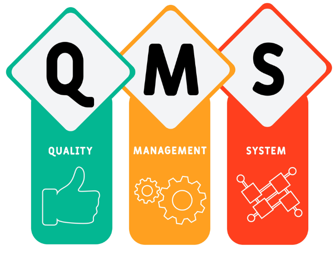
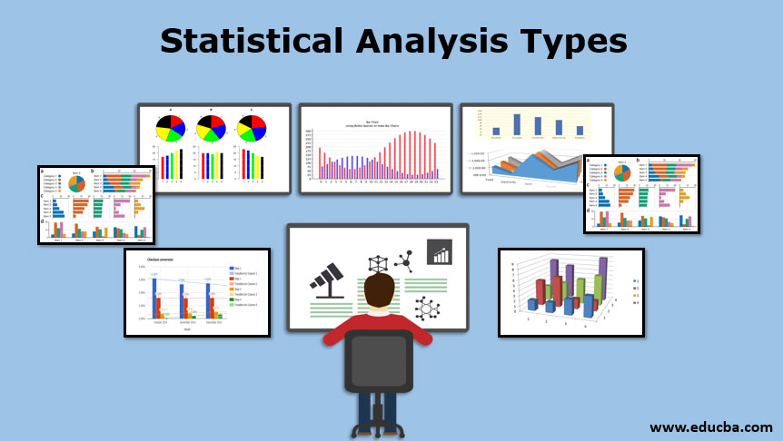
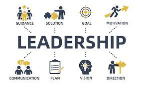
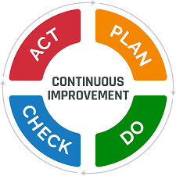
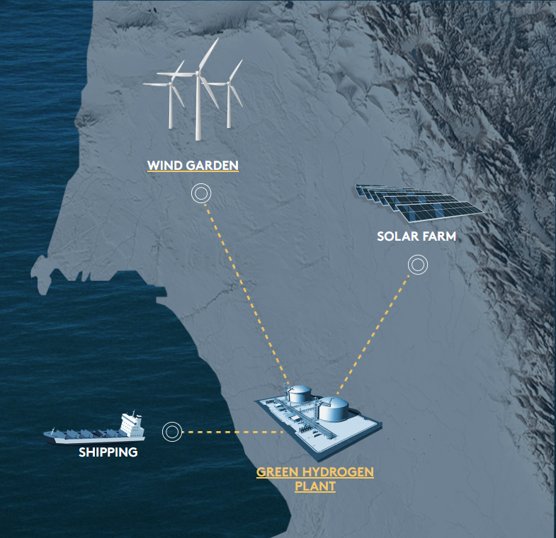
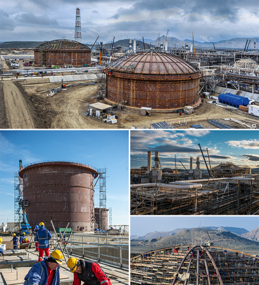
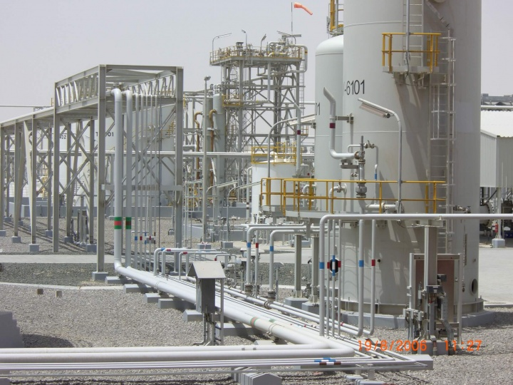

QA/QC Manager | Completion Manager | Source Inspection Manager | Green Hydrogen | Green Ammonia | Alkaline Electrolyser | "Future" Full Stack Developer
About Baris Celik
With over 20 years of experience in quality management for the oil/gas, power plant, and infrastructure industry,
I am a Project QAQC Manager at NEOM Green Hydrogen Company, a visionary project that aims to produce the world's
largest green hydrogen facility.
As a Project QAQC Manager, I oversee and coordinate the Employer QA/QC team activities to implement QMS
requirements during the project execution of HIDC and GHE projects. I review contractors' Project Quality Plans and monitor
and report their quality management performance. I also audit and support all Contractor Quality Programmes and ensure continuous
improvement to the plan as appropriate. I have demonstrated experience in establishing project quality systems that meet the
requirements of ISO 9001 and other international and Saudi Aramco standards. I hold CSWIP 3.1 Welding Inspector and CQI-IRCA
ISO 9001:2015 Lead Auditor certifications, as well as NACE Coating Inspector and ISO 14001 Environmental Management Systems
Internal Auditing certificates.
My LinkedIn Page
My mission is to ensure the highest quality standards for the NEOM Green Hydrogen project, which is a game-changer for the global energy transition and a catalyst for economic growth and environmental sustainability. I am passionate about leading a diverse team of quality resources, mentoring and supporting them in all aspects of quality management across the scopes. I have the ability to work within a diverse cultural environment, both national and international, and communicate effectively in English, Turkish, and Spanish. I am a
practitioner of the Chartered Quality Institute, a professional body that promotes excellence in quality management.
Skills

Quality Systems
In-depth knowledge of quality management systems and their implementation

Statistical Analysis
Profeciency in statistical tools and techniques to analyze data, identify trends, and measure process capabilities
Inspection Techniques
Understanding of variuous inspection methods and their application

Leadership
Ability to lead and motivate a team of QAQC professionals
Communication
Effective communication skills to interact with various stakeholders, including management, customers and suppliers

Continuous Improvement
A mindset focused on identifying and implementing process improvements to enchance quality
Projects
February 2023 - OngoingNEOM-Saudi Arabia,
HIDC (NEOM Hydrogen Innovation and DevelopmentCentre) Project & NGHP (NEOM Green Hydrogen Element) Project
Link

Located at Oxagon in Saudi Arabia’s region of NEOM,
NGHC is aligned with Saudi Vision 2030 and Saudi Green Initiative.
Operating entirely on around 4 GW of renewable electricity, generated from dedicated on-site wind and solar plants.
Covering an area of over 300km2 of land.
Solar farm with 5.6 million solar panels producing up to 2.2GW of solar energy.
Wind garden with over 250 wind turbines generating 1.6GW of renewable energy.
Up to 1.2m tonnes of green ammonia will be exported yearly, a highly dense hydrogen carrier and a cost-effective solution for transportation globally.
Çalik Enerji will undertake the engineering, procurement, construction,
assembly, testing and commissioning of the Power Plant Project and all related auxiliary equipment
and structures within the scope of West Qurna 2, one of the largest oil fields in Iraq, developed and
operated by LUKOIL. The contract for the project was signed between LUKOIL and Çalik Enerji on 21 December 2020.
The Project is planned to be completed within 34 months.
The primary objective of the Ras Tanura Refinery Clean Fuels Project is to enable the Ras Tanura refinery—the largest refinery
in Saudi Arabia—to produce transportation fuels that will be compliant with future specifications. The project targets the ability
to produce gasoline and diesel products to Euro 5 specifications, as well as to maximize refinery gasoline production, especially
through the utilization of Khuff gas condensate naphtha.
January 2016 - April 2018
Baku, Azerbaijan
Shah Deniz Project Stage 2 Sangachal Onshore Terminal Facility
Link

Shah Deniz Stage 2 Onshore Terminal Facility was be constructed at Sangahcal Terminal,
located 45 km. South of Baku city centre. The scope of work associated with the above facilities
include civil engineering work, piling, foundations, underground and open drainage systems,
terminal access and internal roads, process equipment, storage tanks including design, pipe racks,
piping, electrical and control systems construction and installation activities.
January 2013- December 2015
Baku, Azerbaijan
BP Operation - Function Lead
November 2010 - December 2012
Abu Dhabi, UAE
1.8 mbpd Phase 1 Development Project (Bab Field) - Thamama G and Habshan 2
Link
Type: PMT on behalf of ADNOC

Bab Thammama G and Habshan 2 onshore oil fields, consisting of the following facilities:
639 Km of Pipelines including transfer lines, flow lines & water Injection lines.
4 new Remote Degassing Stations (RDS)/Transfer Lines with 54 new Prod. Wells and Flow lines.
8 new Water Injection Clusters (WIC) with 52 new WI Wells, Headers and Injection lines.
Modification Works at Bab Central Degassing Stn. (BCDS) and 33kV OH lines to all new facilities (67km).
January 2010 - August 2010
Jubail, Saudi Arabia
Saudi Kayan - Jubail Petrochemicals Complex - Phenolics Complex
Link
August 2008 - November 2009
Jubail, Saudi Arabia
Sharq Petrochemical Expansion Ethane/Propane Cracker EPC Contract
Link
Apr 2007 - Dec 2007
Rabigh, Saudi Arabia
Petro Rabigh UTILITIES & OFFSITES UMBRELLA (UOU)
Link
August 2002 - March 2007
Baku, Azerbaijan
BP ACG Ph 1/2/3 and Shah Deniz Project Stage 1 Sangachal Onshore Terminal Facility
Link